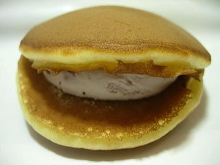

簸上堂
島根県雲南市木次町新市76番地
2009/01/25 簸上堂のブルーベリー生どら
スーパーのグッディーに行ったら販売していました。
餡の入ってないタイプの生クリームどら焼きです。

餡がなくて、その分クリームが沢山入っているので洋菓子っぽいですね。
ブルーベリーのクリームが、レーズンバターっぽい感じがしました。脂っぽい感じもするんですが、味にキレがありスッキリとしたブルーベリー味が美味しかったです。
抹茶味もあったので、今度はそっちを買ってみようと思います。
島根県雲南市木次町新市76番地
スーパーのグッディーに行ったら販売していました。
餡の入ってないタイプの生クリームどら焼きです。

餡がなくて、その分クリームが沢山入っているので洋菓子っぽいですね。
ブルーベリーのクリームが、レーズンバターっぽい感じがしました。脂っぽい感じもするんですが、味にキレがありスッキリとしたブルーベリー味が美味しかったです。
抹茶味もあったので、今度はそっちを買ってみようと思います。